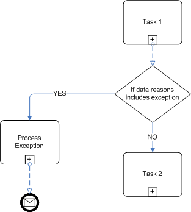

| Task: Determine Rule Implementation |
 |
|
| Roles | Primary Performer: | Additional Performers: |
|---|
|
Project teams involved in BRMS deployment are often asking the following type of questions:
There are definitively multiple variables which could influence the decision on where to implement rules. We can start by looking at the BRMS value propositions, it should help to get a first set of variables:
The purpose here is not to say it is not possible to support those variables in standard software development practices, but more to find some good patterns on how to decide on where to implement the business logic. When looking at a business rules statement software engineer can see different possible choices of implementation like:
In the following paragraphs address each of different choices with their impact on the variables Rule which is controlling the structure of the model and the reference integrity should be in the physical data model, the O/R mapping layer or on the domain object model.
· A Company has a list of users who can login to the application · A Company has a list of groups of user · A User is part of a group · A group includes a list of Users · A group has one user reference who is the creator of the group Terms and facts and derived attributes are the primary constituents of data models and are represented in a UML class diagram, and logical data model (entities/relationship model), or a physical data model. The following table lists the impact of this implementation on the previously defined variables
Implementing business rule in application code is currently the most common way the IT developer is doing it. The major justifications are performance and flexibility of the coding language. Using hard coded if/then/else statements isn't too flexible, but in the hands of a top notch programmer it can be very fast and arguably as fast as or faster than a rule engine. Assuming the programmer has unlimited time to optimize the execution for a fixed set of rules. If the ruleset changes frequently and the system can't tolerate a big drop in performance, then a rule engine is the solution. The following example of business rules may be easily implemented in code: verify in each items the customer bought since he is customer with us there is at least one article of type T so that we can propose the new product Y with X % of discount, except if the customer is from the state of New York or New Jersey. We can implement this in a method which loops on the articles bought by a given customer and do the search. At a first analysis, navigating in a collection of objects and testing multiples conditions on them is easy to implement using the power of programming language. One thing interesting will be the hard coding of the value of New York, New Jersey... If this logic change we need to add if statements in the code. Other type of rules are related to the control of the execution of a set of "services" to support specific use case. Dispatching, orchestration, data manipulation, … are better candidate to be implemented in application code. Those rules are more static, often more complex, and definitively linked to context of execution. The context may be too complex to expose to a rule engine. Orchestration are now very well supported by BPM-BPEL engine because the developer needs to add flexibility on the service selection and invocation. The evaluation of the important variables is:
Business process automation is the technology components substituting and/or supplementing manual processes to manage information flow within an organization to lower costs, reduce risk, and increase consistency. In this context Business rules describe the structure, operation, and strategy of an organization's business process. The business process definition can be seen as a business rule. Typically a rule involving routing of transactional data to a queue, a task, or a sub process will be most likely implemented in a process map. Defined at the link level business rules are linked to the structure of the process flow. Once designed and implemented there is few chance those rule will change. Changing a business process is most of the time risky: we do not want to change thing working and involving a lot of parties and stakeholders. In fact new policies, regulations or business strategies may affect the rules without changing the core business processes. A rule like: "if there is an exception in the claim processing we want a supervisor to study the claim and the accumulated reasons extracted by the process so far" will most likely finish as guard on a process map link:  Task 1 will most of the time call a rule engine to take decision on the claim. One of the pattern is to accumulate all the possible reasons in a list. If the list include an exception or high priority reason, the process map will route to the "Process Exception" task. This task can queue the work item to a supervisor queues. There are a lot tasks in a business process that are decision rich, so with a lot of business rule to execute before completing the task. Those rules can be executed by a rule engine. The integration Rule Engine – BPM will bring the value to support those cases. But as good practice it is always possible to try to re-arrange an activity diagram of a use case or a process map so that some activities are purely automatically executed in a rule engine mapped as a rule flow. The variables evaluation:
Any type of rule using a forward chaining approach will best fit in any RETE rule engine. To avoid long explanation a rule engine will perform very efficiently the following rules which are more complex to implement in code:
If we enter a new value for A all the depend rules will be fired. Rules can be entered in any order we want, it is less declarative than procedural code. Backward chaining rule pattern can also been supported by a rule engine. The rule system works down the tree to find the data that it requires. It will ask question to be able to infer decisions. It is possible to implement backward chaining with product using pure inference by using a goal object. As we already stated one of the key factor is flexibility. We already encounter the following decision: "This rule will not change"... but in fact it will do in the future or some of related one" . We can for example take a simple example of a static rule defined as If the status of the customer is gold and the product is <> then apply <> % discount. This rule can be implemented within application code using some tables in a database that link the product, the category of possible status and the discount to apply. But when discussing with the business user to understand what is a gold customer? We can get other conditions that definitively will change over time. For example, a gold customer is initially defined as one who spends more than <> amount of money during the last 6 months. Then an exception is added. Product X was available only for 4 months, so the time period needs to be 4 months for product X. Additional qualifiers are added over time. Customers in certain countries are ineligible. A customer must be 18 years old. A customer working for our company or subsidiaries cannot have gold status. And so on. The variables evaluation:
Rule in a graphical user interface We will base the integration on the Model-View-Controller (MVC) design pattern. The presentation tier handles the client interaction by abstracting the low-level protocol details into an event-based mechanism. The view's main requirement is synchronization with the model so that data displayed to the user is up to date. The controller is responsible to prepare the data and manage the view flow and content. Delegating the creation of content to a rule engine is possible but need to be done synchronously. The business rule will be related to control the list of widget the GUI will present. A typical pattern is around product catalog application or dynamic questionnaire. The rule pattern to control the content looks like: If the selection on this page was <> then add this <> to the model used in view <> A rule to control the flow of page looks like If the user visited page <> (and | or page <>) then next page is <> Both rules may be enriched with business type decision based on data of the model. In these pattern it is clear we need to keep the previous context of decision, and events the user created. So most of the current applications are putting the business rule in the controller class or in the java script of the view, but it is possible to design the controller to use a rule engine, as soon as the decision needs to change. This is particularly true for e-commerce web site, where marketing campaign can quickly be put in place by proposing product or product feature more dynamically. |
This program and the accompanying materials are made available under the |